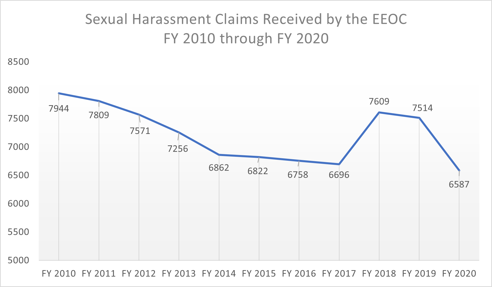
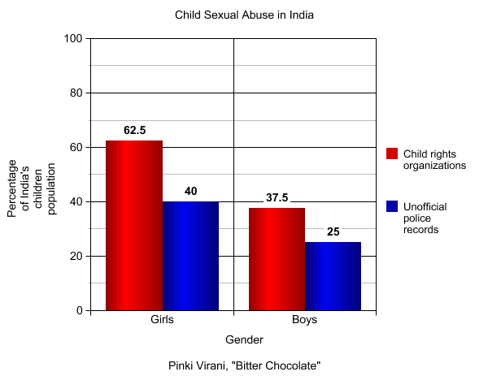

As the year is about to end we are here with the stats of 2021.According to the national comission for women(NCW)
There was a 46 per cent rise in complaints of crimes against women in the first eight months of 2021 over the corresponding period of last year, and over half of these were from Uttar Pradesh.
As the complaint rate has increased for sure, it could mean many things. Either the harrasement rate has increased in the country or the people are now more aware to file a complaint regarding
sexual harrasment when it was seen as a strongly embedded taboo in the society. Well, according to the NCW cheif Rekha Sharma, it's the later case.NCW chief Rekha Sharma said there has been a rise in the complaints because the commission has been regularly conducting awareness programs due to which the public is now more aware about its work.
The NCW received a total of 19,953 complaints of crimes against women from January to August this year, up from 13,618 in the corresponding period of 2020, it said.
Akansha Srivastava, founder of the Akanksha Foundation which works for education and empowerment of people by imparting knowledge on cyber safety, said the rise in complaints is due to more awareness among women to reach out for help.
"When complaints rise it is a good thing because it means more women have the courage to speak up and there are platforms in place now and they are aware of where to report. People are reaching out now. Earlier women might not be coming forward to lodge their complaint...they didn't know what they are going through is harassment but now they do, and they are coming forward to report which is a good thing," she said.
“Of pain you could wish only one thing: that it should stop. Nothing in the world was so bad as physical pain. In the face of pain there are no heroes.”

More than 6,500 sexual harassment claims were filed with the EEOC in FY 2020. This represents a drop from FY 2019, but we cannot be sure about what may have caused this decrease.
Child Sexual Abuse
According to wikipedia,"Child sexual abuse, also called child molestation, is a form of child abuse in which an adult or older adolescent uses a child for sexual stimulation."
According to the survey,
One in 9 girls and 1 in 53 boys under the age of 18 experience sexual abuse or assault at the hands of an adult.
82% of all victims under 18 are female.
Females ages 16-19 are 4 times more likely than the general population to be victims of rape, attempted rape, or sexual assault.
Child sexual abuse can occur in a variety of settings, including home, school, or work (in places where child labor is common). Child marriage is one of the main forms of child sexual abuse; UNICEF has stated that child marriage "represents perhaps the most prevalent form of sexual abuse and exploitation of girls". The effects of child sexual abuse can include depression, post-traumatic stress disorder, anxiety, complex post-traumatic stress disorder, propensity to further victimization in adulthood, and physical injury to the child, among other problems. Sexual abuse by a family member is a form of incest and can result in more serious and long-term psychological trauma, especially in the case of parental incest.
The effects of child sexual abuse can be long-lasting and affect the victim's mental health. Victims are more likely than non-victims to experience the following mental health challenges:
About 4 times more likely to develop symptoms of drug abuse
About 4 times more likely to experience PTSD as adults
About 3 times more likely to experience a major depressive episode as adults

Two out of every three children in India are physically abused, according to a landmark government study.
Commissioned by the Ministry of Women and Child Development, the study says 53% of the surveyed children reported one or more forms of sexual abuse.
This is the first time the government has done such an exhaustive survey on the controversial issue of child abuse.
Abuse of children, particularly sexual abuse, is rarely admitted in India and activists have welcomed the study.(BBC 9 April 2007)
Now Human Rights Watch on this issue.
Report;
Child sexual abuse is disturbingly common in homes, schools, and residential care facilities inIndia. A government-appointed committee set up after the New Delhi attack to recommend legal and policy reform has found that child protection schemes “have clearly failed to achieve their avowed objective.”